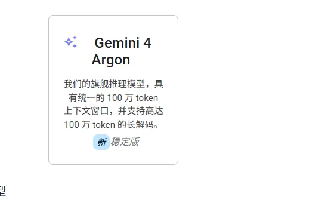

GoogleAlphabet · Google DeepMind
唯一从芯片（TPU）到模型（Gemini）到入口（搜索、安卓、Workspace）全栈自有的厂商：Gemini App 用户突破 10 亿，云业务三季度收入翻倍，模型 API 每分钟处理近 320 亿 token。
一页结论
- 全栈自有：自研 TPU、Gemini 模型，并拥有搜索、安卓、Chrome、Workspace、YouTube 等分发入口S3S5
- 用户与用量双高：Gemini App 用户达 10 亿，是 Google 历史上增长最快的产品；自有模型 API 每分钟处理近 320 亿 tokenS3
- 云业务爆发：Google Cloud 三季度收入 307 亿美元，同比增长 103%，TPU 系统需求旺盛S3
- 旗舰模型 Gemini 4 Argon：100 万 token 上下文、最多 100 万 token 输出；当前价格为输入 $2 / 输出 $10，12 月 1 日起调至 $4 / $20S1S2
- 开放较小模型：Gemma 4 系列（2026 年 3 月起）开放权重，旗舰 Gemini 保持闭源S6
01公司介绍
02公司战略
Google 的主线是“全栈 + 全入口”：用自有芯片压成本，用自有入口做分发，用云业务变现。
- AI 进入所有产品：搜索的 AI 概览与 AI 模式、Gemini App、Workspace、Chrome、安卓S5
- Agent 全线布局：个人 Agent Gemini Spark、企业通用 Agent Gemini agent、开发平台 AntigravityS5S8
- 云与 TPU 双轮：企业通过 Google Cloud 采购模型与算力，TPU 也对外部模型厂商出租S3S7
- 价格调整：Gemini 4 Argon 12 月起涨价一倍，Flash 系列 2027 年起涨价一倍，结束低价抢量阶段S1
03模型矩阵与定位
| 模型 | 定位 | 输入 | 输出 | 说明 |
|---|---|---|---|---|
| Gemini 4 Argon | 旗舰推理模型 | $2.00 | $10.00 | 12 月 1 日起 $4 / $20；100 万上下文，最多 100 万 token 输出S1S2 |
| Gemini 3.8 Flash | 主力 | $0.75 | $3.75 | 2027 年 1 月 1 日起翻倍S1 |
| Gemini 3.5 Flash-Lite | 经济 | $0.30 | $2.50 | S1 |
| Gemini Omni Flash | 视频生成 | — | — | S1 |
| Nano Banana 2.1 | 图像生成 | — | — | S1 |
价格单位：美元 / 百万 token，标准档付费价。另有批量、Flex（5 折）与 Priority 档；Contributor 档为邀请制私测S1。

04产品与 Agent 布局
应用层
搜索：AI 概览、AI 模式Gemini App 与 Gemini SparkWorkspace 内的 Gemini agentChrome 自动浏览Antigravity 与 Jules
开发者平台
Gemini API 与 AI StudioGemini Enterprise Agent Platform（Google Cloud）Antigravity SDK
模型层
Gemini 4 Argon / CarbonGemini 3.8 Flash、Flash-LiteGemini Omni、Nano Banana、VeoGemma 4 开放权重
算力层
自研 TPUGoogle 数据中心
渠道搜索、安卓、ChromeGoogle AI 订阅Google CloudWorkspace
Gemini 的 Agent 产品详细分析见《编程与办公智能体》系列中的 Gemini 一篇。
05开放权重
| 模型 | 发布 | 说明 |
|---|---|---|
| Gemma 4（E2B、E4B、12B、26B-A4B、31B 等） | 2026-03 起 | Hugging Face 上下载量较高，31B 版本累计下载超 800 万次S6 |
| Gemini 旗舰 | — | 未开放权重 |
06商业模式
07上下游与渠道
上游：芯片与算力
自研 TPU自建数据中心（2026 年资本开支约 2,000 亿美元）S4
Google
Gemini 模型、搜索、Workspace、Cloud
渠道
搜索、安卓、Chrome 等自有入口Google Cloud 企业销售Google AI 订阅
生态伙伴
TPU 外部客户：Anthropic 等S7Gemini 模型也在 Cursor 等第三方工具中提供
08用户与收入
09开发者口碑
以下来自开发者调研与媒体报道（B 级来源）。
10安全合规
11近期动态
12潜在风险分析意见
| 风险 | 表现 | 可能程度 |
|---|---|---|
| 资本开支回报 | 资本开支指引持续上调，市场关注投入能否转化为利润S4 | 中 |
| 搜索被分流 | 对话式 AI 改变用户获取信息的方式，可能冲击搜索广告（分析意见） | 中 |
| 开发者市场 | 编程 Agent 使用率落后S10 | 中 |
| 涨价影响 | API 价格翻倍可能让价格敏感的开发者转向国产开放模型（分析意见） | 中 |
| 反垄断 | 多国监管对搜索与广告业务的审查 | 中 |
“可能程度”为基于现有公开信息的判断，不是量化预测。
13综合结论分析意见
优势
- 芯片到入口的全栈
- 10 亿级用户与海量 API 用量
- 云业务高速增长
劣势
- 开发者工具落后
- 产品线命名混乱
机会
- TPU 对外出租
- Workspace 存量客户升级 Agent
威胁
- 搜索广告被分流
- OpenAI、Anthropic 在企业与开发者市场的竞争
对 AI 产品团队的启示
- 全栈带来成本优势：自有芯片让 Google 能长期以低价抢量，再择机提价。
- 入口比模型更难复制：搜索、安卓、Workspace 让 Gemini 一年用户翻倍。
- 低价抢量之后会回归定价：API 年底翻倍提醒开发者不要把成本模型建立在促销价上。
- 云是大模型最确定的变现渠道：模型能力最终通过云和企业采购变成收入。
信息缺口
以下信息未找到可靠的公开来源，本报告不做推测。
- Gemini 相关的单独收入
- Gemini 4 Argon 的准确发布日期与 Carbon 模型的定价
- Gemini App 用户数的口径（月活或累计）
- TPU 外部收入
来源
A 官方 · B 权威媒体或第三方 · C 社区（仅用于口碑与线索）。访问日期均为 2026-11-02。
- S1 · AGemini API PricingGoogle AI for Developers
- S2 · AGemini modelsGoogle AI for Developers
- S3 · BAlphabet reports Q3 2026 revenue of $127.6 billion9to5Google（援引财报与电话会） · 2026-10-28
- S4 · BAlphabet Posts $127.6B Q3 With Google Cloud Up 103%AI Weekly · 2026-10
- S5 · AThe Gemini app becomes more agenticGoogle 官方博客 · 2026-05-19
- S6 · AGemma 4 on Hugging FaceHugging Face
- S7 · BAnthropic（算力合作）Wikipedia
- S8 · AWelcome to Gemini at Work 2026Google Cloud 博客 · 2026-10-09
- S9 · AGoogle AI 订阅方案Google
- S10 · BAI Coding Agents: Adoption TrendsJetBrains Research · 2026-08
- S11 · BGoogle moves Gemini CLI into Antigravity CLIVirtualization Review · 2026-05-19